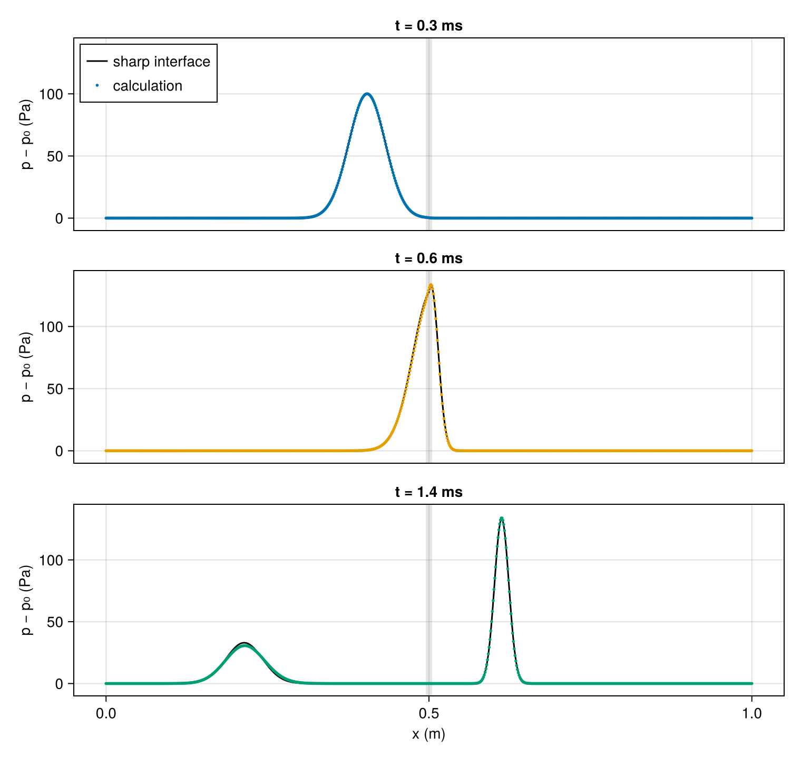

Acoustic interface
Sound that reaches a boundary between two media is partly reflected and partly transmitted. For a plane wave at normal incidence on a sharp boundary, the split depends only on the acoustic impedance $Z = \rho c$ of each medium. Pressure and velocity are continuous across the boundary, and a wave traveling in one direction carries the velocity $u' = \pm p'/Z$, so a wave arriving from medium 1 reflects and transmits with the pressure amplitudes
\[R = \frac{Z_2 - Z_1}{Z_2 + Z_1}, \qquad T = \frac{2 Z_2}{Z_1 + Z_2} = 1 + R.\]
The acoustic intensity of a traveling wave is $p'^2/Z$, so the reflected and transmitted fractions of the incident energy are $R^2$ and $(Z_1/Z_2)\,T^2$, which sum to one. Ultrasound imaging depends on this split: gel between the probe and the skin removes a layer of air whose impedance mismatch with tissue would reflect nearly all of the sound.
This tutorial sends a sound pulse through air onto sulfur hexafluoride, a gas five times denser than air with a sound speed of 137 m/s. Air and SF6 are a common pair in shock-tube experiments on interface instabilities.
using CompactLES # re-exports MPI
using CompactLES.Regions
MPI.Initialized() || MPI.Init(threadlevel=:funneled)
using CairoMakie
using Printf
CairoMakie.activate!(type = "png")Gases
Both gases are at atmospheric pressure and room temperature. A sound wave changes the temperature by a fraction of a kelvin, so each gas can be taken as calorically perfect. Given species names, IdealMixture holds each heat capacity at its 298.15 K value in the bundled NASA-9 fits, where the Nasa9Mixture of Shock tube lets it vary with temperature. thermodynamic_state gives the density and sound speed of each gas.
eos = IdealMixture(["Air", "SF6"])
p0 = 101_325.0
air = Prim(Y = mass_fractions(eos, "Air" => 1.0; basis = :mole), p = p0, T_ion = 300.0)
sf6 = Prim(Y = mass_fractions(eos, "SF6" => 1.0; basis = :mole), p = p0, T_ion = 300.0)
state_air, state_sf6 = thermodynamic_state(eos, air), thermodynamic_state(eos, sf6)
c1, c2 = state_air.c, state_sf6.c
Z1, Z2 = state_air.rho * c1, state_sf6.rho * c2
R = (Z2 - Z1) / (Z2 + Z1)
T = 1 + R
@printf("air: ρ %.3f kg/m³, c %.1f m/s, Z %.1f kg/(m² s)\n", state_air.rho, c1, Z1)
@printf("SF6: ρ %.3f kg/m³, c %.1f m/s, Z %.1f kg/(m² s)\n", state_sf6.rho, c2, Z2)
@printf("sharp interface: R = %.4f, T = %.4f\n", R, T)air: ρ 1.177 kg/m³, c 347.2 m/s, Z 408.5 kg/(m² s)
SF6: ρ 5.933 kg/m³, c 136.7 m/s, Z 810.9 kg/(m² s)
sharp interface: R = 0.3299, T = 1.3299SF6 has about twice the impedance of air: its density is five times higher and its sound speed less than half. The reflected pulse keeps the sign of the incident one, and the transmitted pressure is a third larger than the incident pressure, while only $(Z_1/Z_2)\,T^2 \approx 0.89$ of the energy crosses.
Initial state
The pulse is a Gaussian of pressure amplitude 100 Pa and width $\sigma = 4$ cm, centered 20 cm from the interface. In a linear wave traveling toward $+x$, the density and velocity disturbances are $\rho' = p'/c^2$ and $u' = p'/Z$, the relations of the simple wave in Coalescing shock at small amplitude. At a thousandth of the ambient pressure, the steepening described there would take more than a hundred times the duration of this run to form a shock.
x_interface = 0.5
amplitude, x0, sigma = 100.0, 0.3, 0.04
f(x) = amplitude * exp(-((x - x0) / sigma)^2)
pulse(x, y, z) = Prim(Y = air.Y, p = p0 + f(x), rho = state_air.rho + f(x) / c1^2,
u = (f(x) / Z1, 0.0, 0.0))Layers accepts a function (x, y, z) -> Prim wherever it accepts a state. Here the background is the air carrying the pulse, and SF6 fills the part of the domain beyond $x_i = 0.5$ m. Slip walls close both ends, far enough away that no wave reaches them during the run.
problem = Problem(
name = "air/SF6 acoustic interface",
eos = eos,
domain = ((0.0, 1.0), (0.0, 1.0), (0.0, 1.0)),
bcs = (SlipWallBC(), PeriodicBC(), PeriodicBC()),
ic = Layers(pulse, Slab(1, lo = x_interface) => sf6),
)Grid and run
The grid has 800 points on the 1 m tube, 32 points per pulse width in air. The transmitted pulse is shorter by the ratio of the sound speeds, which leaves about 13 points per width in SF6. The numerics are the defaults, including the artificial properties and the filter.
solver, Q = setup(problem, Numerics(n_global = (800, 1, 1)))
x, p_initial = line_profile(solver, Q, :p)([0.0, 0.0012515644555694619, 0.0025031289111389237, 0.003754693366708386, 0.0050062578222778474, 0.006257822277847309, 0.007509386733416772, 0.008760951188986232, 0.010012515644555695, 0.011264080100125157 … 0.9887359198998749, 0.9899874843554444, 0.9912390488110138, 0.9924906132665833, 0.9937421777221527, 0.9949937421777222, 0.9962453066332917, 0.9974968710888611, 0.9987484355444306, 1.0], [101325.0, 101325.0, 101325.0, 101325.0, 101325.0, 101325.0, 101325.0, 101325.0, 101325.0, 101325.0 … 101324.99999999999, 101324.99999999999, 101324.99999999999, 101324.99999999999, 101324.99999999999, 101324.99999999999, 101324.99999999999, 101324.99999999999, 101324.99999999999, 101324.99999999999])The pulse reaches the interface after 0.58 ms. A callback records the pressure at 0.3 ms, while the pulse approaches, and at 0.6 ms, while it crosses. The run ends at 1.4 ms, when the reflected and transmitted pulses have separated.
times = [0.3e-3, 0.6e-3, 1.4e-3]
profiles = Vector{Float64}[]
record = Callback(AtTime(times[1:2]), function (solver, Q)
push!(profiles, line_profile(solver, Q, :p)[2])
nothing
end)
run!(solver, Q; tfinal = times[3], nmax = 10_000, callback = record)
push!(profiles, line_profile(solver, Q, :p)[2])
solver.step778Reflection and transmission
For a sharp interface the exact solution is a superposition of three pulses of the initial shape: the incident pulse, moving at $c_1$; the reflected pulse, its mirror image about the interface scaled by $R$; and the transmitted pulse, scaled by $T$ with its width multiplied by $c_2/c_1$.
function sharp(x, t)
if x < x_interface
return f(x - c1 * t) + R * f(2x_interface - x - c1 * t)
else
return T * f(x_interface - c1 * t + (c1 / c2) * (x - x_interface))
end
end
fig = Figure(size = (760, 720))
xs = range(0, 1; length = 2000)
for (row, (t, p)) in enumerate(zip(times, profiles))
ax = Axis(fig[row, 1], ylabel = "p − p₀ (Pa)", xlabel = row == 3 ? "x (m)" : "",
title = @sprintf("t = %.1f ms", 1e3t))
vspan!(ax, x_interface - 0.005, x_interface + 0.005, color = (:gray, 0.2))
lines!(ax, xs, sharp.(xs, t), color = :black, label = "sharp interface")
scatter!(ax, x, p .- p0, markersize = 4, color = Makie.wong_colors()[row],
label = "calculation")
ylims!(ax, -10, 145)
row < 3 && hidexdecorations!(ax, grid = false)
row == 1 && axislegend(ax, position = :lt)
end
fig
The gray band marks the interface. The pulses move as the sharp-interface solution predicts, and the transmitted one matches it closely, but the reflected pulse is visibly lower. The peaks of the separated pulses and the energy each carries, $\int p'^2/(\rho c^2)\,dx$ for a pulse traveling in one direction, compare with the sharp interface as follows:
dp = profiles[3] .- p0
left, right = x .< x_interface - 0.05, x .> x_interface + 0.05
energy(p, sel, state) = sum(p[sel] .^ 2) / (state.rho * state.c^2)
E0 = energy(p_initial .- p0, x .< x_interface, state_air)
E_R = energy(dp, left, state_air) / E0
E_T = energy(dp, right, state_sf6) / E0
@printf("peak ratios: reflected %.4f (sharp %.4f), transmitted %.4f (sharp %.4f)\n",
maximum(dp[left]) / amplitude, R, maximum(dp[right]) / amplitude, T)
@printf("energy fraction: reflected %.4f (sharp %.4f), transmitted %.4f (sharp %.4f)\n",
E_R, R^2, E_T, Z1 / Z2 * T^2)
@printf("reflected + transmitted energy: %.4f\n", E_R + E_T)peak ratios: reflected 0.3068 (sharp 0.3299), transmitted 1.3389 (sharp 1.3299)
energy fraction: reflected 0.1010 (sharp 0.1089), transmitted 0.8992 (sharp 0.8911)
reflected + transmitted energy: 1.0002The reflected pulse is 7% weaker than the sharp-interface value and the transmitted pulse slightly stronger, while the two energies still sum to the incident energy to within 0.02%. Turning off either the artificial properties or the filter changes the reflected peak by less than 0.1%.
The difference comes from the interface itself. Layers blends two regions over a few grid spacings, so the gas turns from air into SF6 over about 8 mm, a fifth of the pulse width. A wave much longer than such a layer reflects as from a sharp step; a shorter one reflects less, and the pulse contains both. The same layer on a grid twice as fine gives the same reflected peak, while a layer half as thick, or a pulse twice as wide, raises it to 0.323.
What this checks
- The reflected and transmitted pulses travel at the sound speeds of air and SF6, and the transmitted pulse has the amplitude of linear acoustics to within 1%.
- The two pulses together carry the energy of the incident pulse to within 0.02%.
- The reflection falls below the sharp-interface value by an amount set by the thickness of the interface relative to the pulse, not by the grid.
This page was generated using Literate.jl.